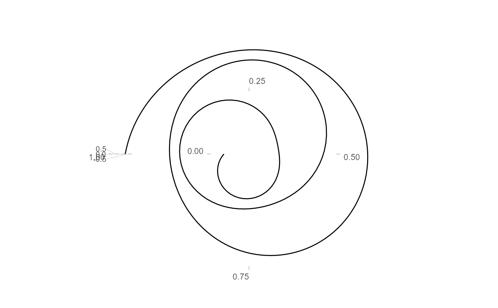
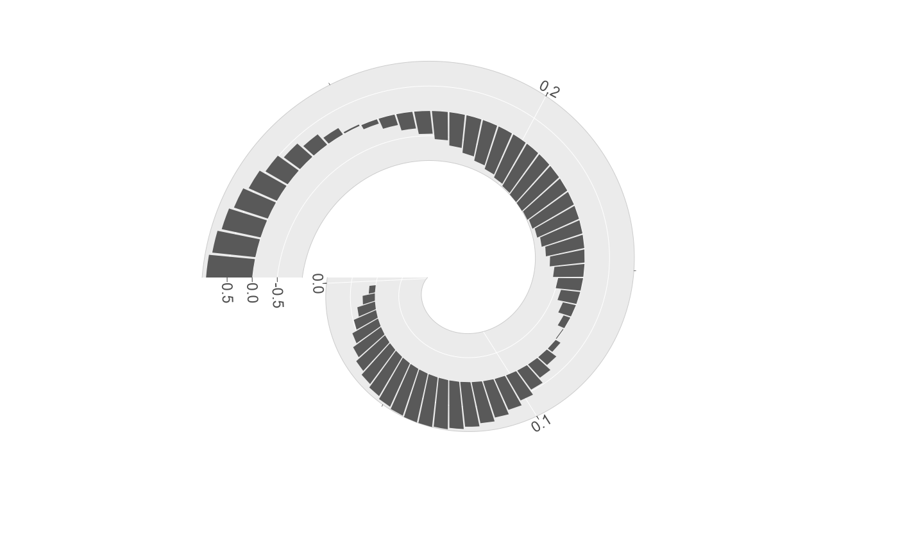

coord_spiral() bends a normal Cartesian ggplot into an Archimedean
spiral, following the geometry used by the spiralize package: the
base spiral is r = b * theta with b chosen so that one turn is one
radius unit. The x aesthetic runs along the spiral (as the angle) and the
y aesthetic runs across the track (as the radius). Points, lines, bars and
areas are all supported, and facets get one spiral per panel.
Usage
coord_spiral(
start = 90,
end = 360 * 3 + 90,
turns = NULL,
period = NULL,
clockwise = FALSE,
inner = 0.04,
outer = 0.46,
height = 0.7,
gap = NULL,
scale_by = c("angle", "curve"),
reverse = FALSE,
flip = c("none", "horizontal", "vertical", "both"),
labels = TRUE,
y_axis = TRUE,
y_axis_theta = NULL,
y_axis_n = 5L,
clip = "off",
xlim = NULL,
ylim = NULL
)Arguments
- start, end
Angular range of the spiral, in degrees (as in
spiralize::spiral_initialize()).360 * n + ais a convenient way to ask fornturns ending at anglea.- turns
Number of turns, as a shortcut for
end = start + 360 * turns. When supplied it wins overend, socoord_spiral(turns = 5)always draws five turns whatever the defaultendis.- period
Number of x units per turn. When supplied,
endis recalculated from the x range andperiod.- clockwise
Draw the spiral clockwise?
FALSE(the default) draws it counter-clockwise, likespiralize().- inner, outer
Inner and outer radius of the whole spiral, in panel npc units (0.5 is the panel edge). Together they set how much of the panel the spiral covers; the distance between two turns follows from the number of turns.
- height
Thickness of the data track, as a fraction of the distance between two neighbouring turns (0 to 1):
0.7leaves a 30% white gap.gapis the same knob the other way round, so pick whichever reads better;gapwins when both are given.- gap
White gap between two neighbouring turns, as a fraction of their distance (0 to 1).
gap = 0.3is the same asheight = 0.7.- scale_by
"angle"maps equal differences in x to equal differences in angle;"curve"maps them to equal distances along the spiral curve.- reverse
Reverse the y direction inside the track?
- flip
One or more of
"none","horizontal","vertical","both"; mirrors the whole spiral.- labels
Draw the x (angle) and y (radial) axis labels along the spiral?
- y_axis
Draw the radial (y) axis ruler as well as the angle axis?
- y_axis_theta
Angle in degrees at which the radial ruler is placed;
NULLfollowssideofscale_y_spiral_axis()(the end of the spiral by default). Ignored when that scale setsaxis_at.- y_axis_n
Number of ticks on the radial ruler when the y scale has no breaks of its own.
- clip
Clipping of the panel, passed on to ggplot2.
- xlim, ylim
Limits passed on to the coord (usually set on the scales).
Details
The coordinate draws both axes itself. Their ticks are kept short enough to sit inside the white gap between two neighbouring turns, the labels stay just outside the ticks, and the number of radial labels follows the thickness of the track, so a thin track gets fewer of them instead of a pile of overlapping text.
Every position aesthetic is warped, not only x and y: xend / yend,
xmin / xmax and ymin / ymax are mapped through the same formula. So
geom_segment() (arrows included), geom_rect(), geom_ribbon() and
geom_boxplot() land on the track, although the edge between two warped
points is still a straight line. Layers without end points
(geom_hline(), geom_vline(), geom_abline()) are not supported.
Use scale_x_spiral_axis() and scale_y_spiral_axis() to change where the
axes sit, how long their ticks are and how the labels are turned; they
otherwise behave like ordinary continuous scales.
Examples
library(ggplot2)
#> Warning: package 'ggplot2' was built under R version 4.5.3
d <- data.frame(x = seq(0, 1, length.out = 200),
y = sin(seq(0, 1, length.out = 200) * 8 * pi))
ggplot(d, aes(x, y)) + geom_line() + coord_spiral()

ggplot(d[1:60, ], aes(x, y)) +
geom_col() + coord_spiral(end = 360 + 90, height = 0.8)
